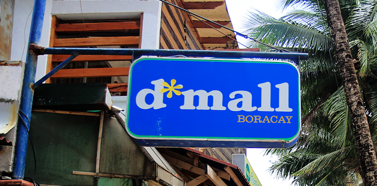
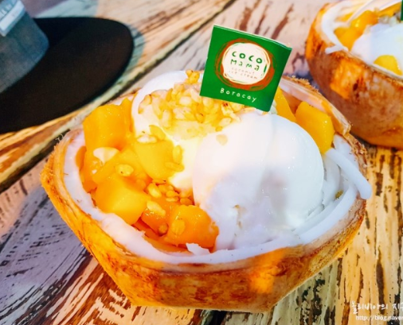
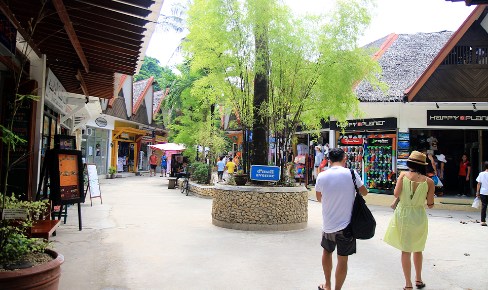
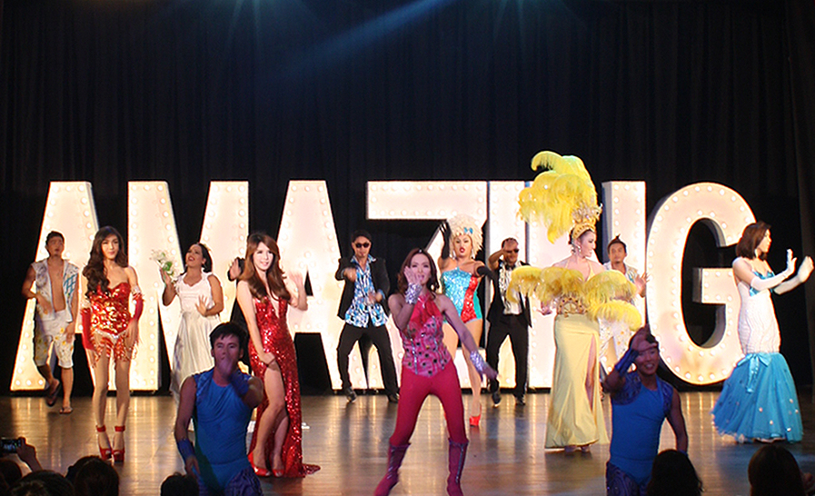
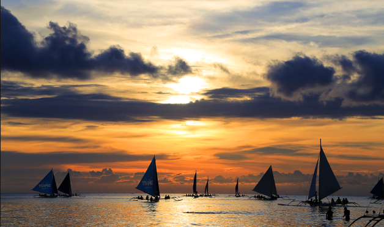
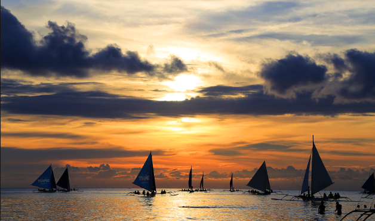

섬 중심부의 대형 상점가로, 웬만한 먹거리 및 입을거리는 모두 있다. 보라카이엔 맨몸으로 가도 페소와 달러만 가지고 간다면 먹고 즐기는 데에는 문제가 없을 정도로 디몰에서 웬만한 쇼핑 및 식사가 가능하다. 코코넛 아이스크림과 치즈케이크, 그리고 피자가 아주 유명하다.



가이드와 같이 왔다면 높은 확률로 추천해주시는 쇼다.
예쁜 트랜스젠더들과 남자들이 여러 나라의 옷을 입고 립싱크를 하며 춤을 추는 공연이다. 태국에 있는 쇼보단 규모가 작지만 가까이에서 볼 수 있고 중간마다 관객을 무대로 부르기도 한다. 무대가 끝나면 배우들과 사진을 찍을 수 있다, 찍는다면 2달러나 100페소를 팁으로 줘야한다.

 
